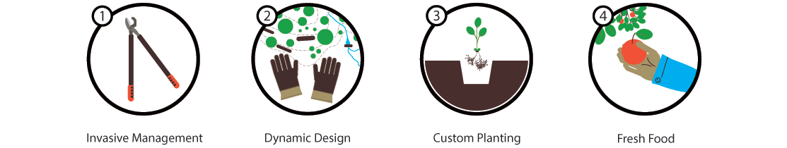

Transform your forest
In Woods of Plenty, you will encounter bountiful fruits and nuts at every turn. The fresh food appears reliably to feed you, your family, and all residents of Woods of Plenty. In time this source of incredible food will produce more than you can harvest. Heading into the winter, your shelves will be stocked.
This place may sound like a fable, but it can be the reality of your forest. This place is not a farm or a garden, but simply Woods of Plenty.
This place may sound like a fable, but it can be the reality of your forest. This place is not a farm or a garden, but simply Woods of Plenty.

A truly light operation
We move on foot and carry our own tools. We do not use heavy machinery and do not use chemicals. Our methods preserve pre-existing native plant material assets and essential organisms in the soil.